定位 · 通報 · 自救
講師：尤翰彬（小B）
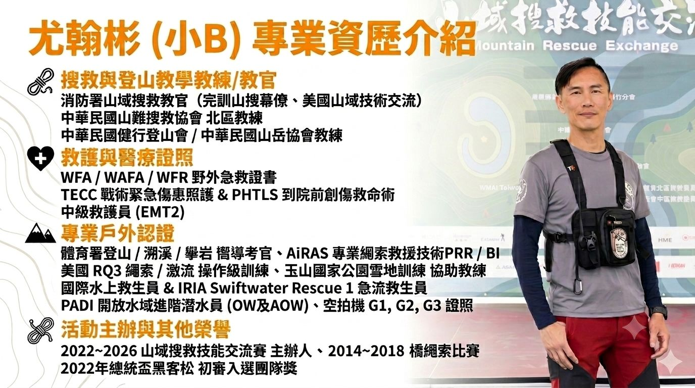
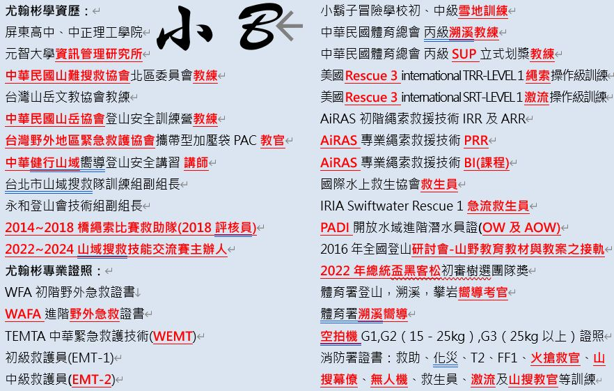
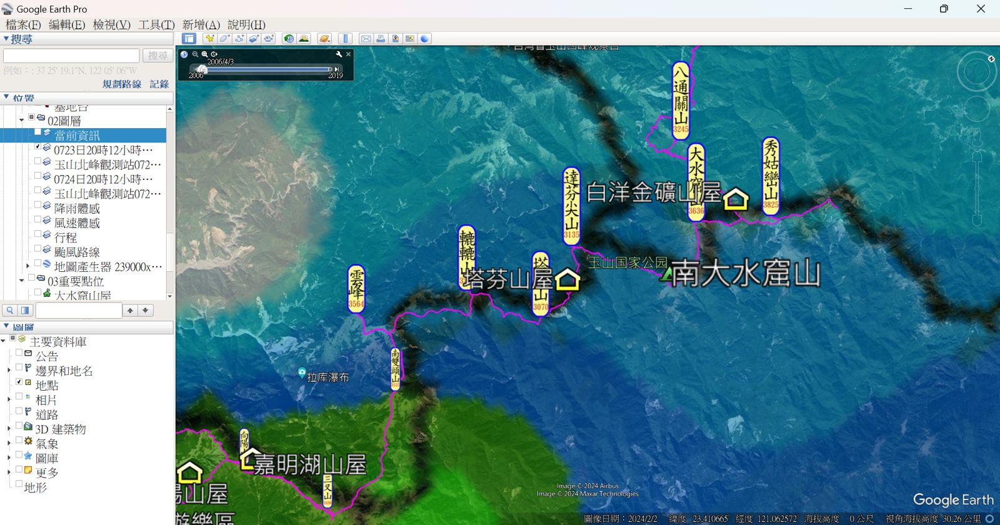
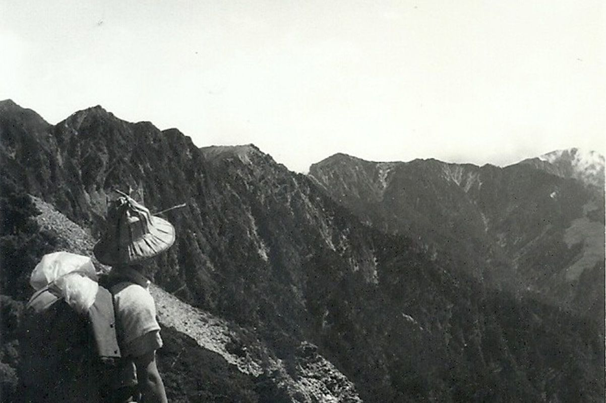
掃描加入
不用登入
共 0 則・0 種答案
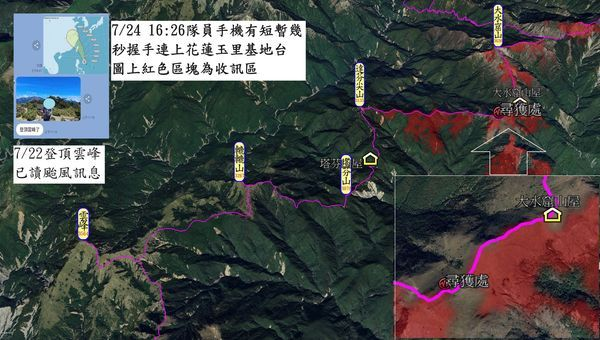
7/20 上午由向陽出發
7/21 經嘉明湖國家步道往拉庫音溪山屋
7/22 登頂雲峰，已讀到颱風訊息；當天是與留守人最後一次通訊
7/24 16:26 隊員手機短暫連上花蓮玉里基地台 → 研判位於零星收訊區
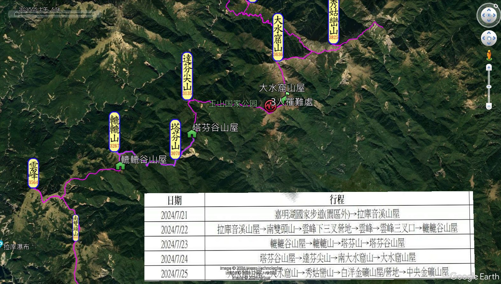
A 是隊員：7/22 在雲峰讀到颱風訊息，你會怎麼做？
B 是留守人：7/23 聯絡不上隊伍，你會怎麼做？
這個案例同時說明三件事：
定位要有手機以外的備援；通報不能只靠零星收訊的手機；自救取決於氣象研判與停損決斷。
👆 點選左邊任一頂點
「沒有訊號，
手機就不能定位」
衛星定位是手機單向接收衛星訊號，沒有基地台一樣能定位、也不用付費。
但上山前先在登山口完成定位（熱開機）會快很多。
「手機有 GPS
就夠了」
手機會沒電、摔壞、進水、遺失。紙圖、指北針、多種通報手段都是備援——沒有一個方法保證有用。
「按下 SOS，
馬上就有人來」
SOS 要經國際中心轉國內權責單位，出勤受天候、資源、技術可行性限制。等待期間要靠自救：保暖、留在好位置。
運用各種方式，標定你的所在地
顆衛星
至少需要 4 顆，才能算出
經度、緯度、高度（三維位置）
運作中 32 顆（承諾至少 24 顆可用）
中軌道約 20,200 公里，每天繞地球兩圈
24 顆運作中
2024 年宣告全面運作
2020 年正式啟用
運作系統由 35 顆衛星組成
📱 2020 年以後的手機晶片大多能同時接收四套系統——可用衛星越多，定位越快、越穩。
只靠衛星訊號從頭定位
很慢
在沒網路的山區第一次定位，可能要等很久
有網路時，先透過網路下載衛星資料
很快
在登山口有訊號時先定位一次，再開飛航模式
✅ 行動口訣：登山口 → 開 APP 定位成功 → 再開飛航模式
一般登山環境誤差
溪谷、密林、峭壁旁、雲層厚 → 誤差變大
APP 顯示誤差超過
代表定位不佳，移到開闊處再等一下
與參考軌跡相差超過
要警覺可能走錯路
⛰️ 高度只供參考：衛星算的是「橢球高」不是海拔；氣壓式高度計會受天氣影響，要在已知高度點校正。
手機搜尋不到基地台時，會加大功率而耗電。
衛星定位在飛航模式下仍可運作
手機與基地台的通聯（握手）紀錄，是搜救單位研判失聯者位置的重要線索。
在稜線、開闊處休息時關閉，回報留守人
恢復訊號後，簡訊通常最快送達，LINE 等通訊軟體可能要等一段時間 → 緊急通報優先用簡訊。
放到最大 → 按右下角定位鍵 → 長按藍色點約 2 秒 → 跳出經緯度
Android：「台灣大地羅盤」等
iPhone：內建「指南針」
對話框選分享位置，送出前多按幾次右上角定位鍵讓位置更新
點選定位簡訊連結，位置經網路回傳；定位需要時間累積精度
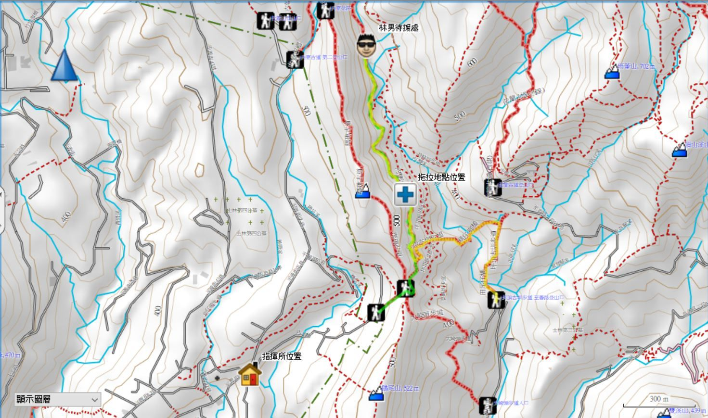
放到最大 → 右下角定位鍵 → 長按藍色點 2 秒 → 記下跳出的數字
Android 開「台灣大地羅盤」；iPhone 滑到最左頁搜尋「指南針」→ 看畫面下方經緯度
傳給隔壁同學：先多按幾次右上角定位鍵，再送出
三種方法讀到的數字一樣嗎？差多少公尺？格式一樣嗎？
✍️ 把你的座標寫在這裡
輸入後會判斷格式並提供地圖連結
25.028803°
→ 小數 0.028803 × 60 = 1.72818 → 1′
→ 小數 0.72818 × 60 = 43.69 → 43.69″
= N25° 1′ 43.69″
📞 報案時講清楚：「北緯、東經」＋格式＋精度。
例：「北緯 25.0288、東經 121.5882，誤差 10 公尺」
「登山不帶紙圖，
不是太自大，
就是有些無知。」
— 引自 2009 年版教材
地形分析、尋路技巧、相對位置判斷；紙本地圖、指北針與高度計，仍然無可取代。
回來前請確認：手機電量 > 50%、已登入 Google 帳號、已安裝 LINE
運用各種方式，把你的位置傳出去
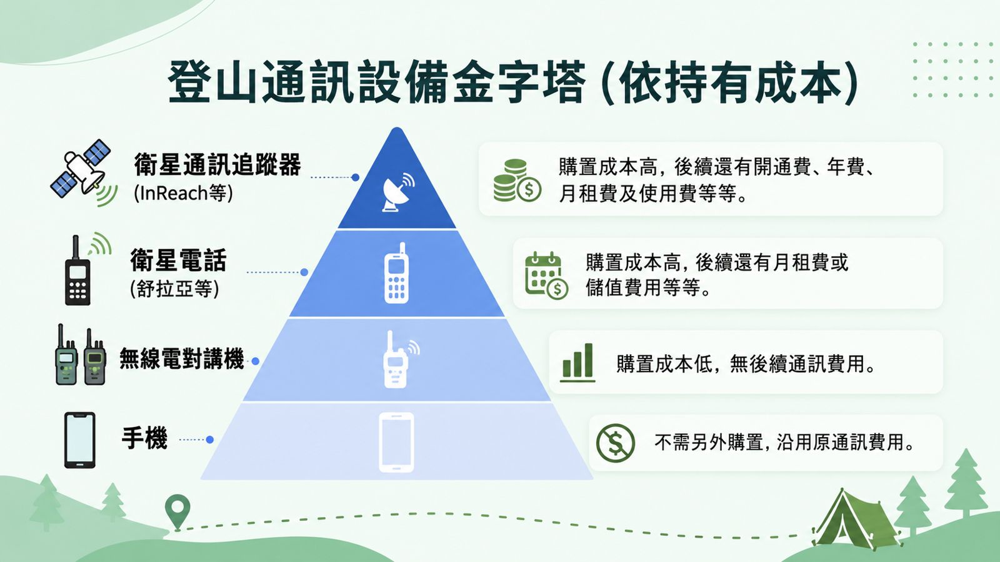
🧭 你的行程是？
點選左側情境，看建議的組合
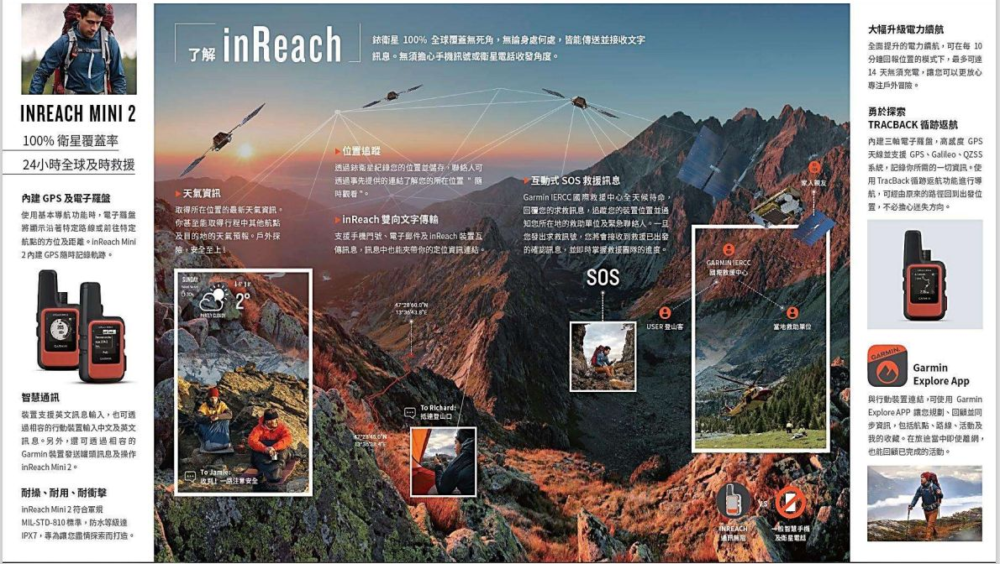
2 人隊伍經第二獵寮處摔落骨折，現場無手機基地台訊號。
以 inReach 觸發 SOS 並發送求救訊息 → 留守人轉報當地 119、Garmin IERCC 也轉知消防署 → 3/28 直升機後送就醫。
4 人隊伍於花蓮五甲崩壁附近不慎墜落，現場有手機訊號。
隊友向花蓮 119 求援並派出搜救隊；同時以 inReach 觸發 SOS → IERCC 緊急回應並轉知消防署。
👉 有手機訊號時也同時觸發 SOS——多一條管道，就多一層保險。
手機 GPS、輸入電力座標或地圖點選定位；可語音報案（傳送座標到指揮中心）或簡訊報案（選案件類別、填待救與受傷人數）
消防機關傳定位簡訊，迷途者點連結，位置經網路回傳；定位需要時間累積精度，別點完就關
例：臺中市政府消防局會傳送定位連結，或邀請受困者加入 LINE 群組回傳位置
✅ 今天回家前：安裝 119 報案 APP、完成註冊，不要等出事才下載。
掃描 QR code（或點簡訊連結）
允許取用位置；findme.help 需再按「定位」
等數秒 → 回報緯度、經度、海拔、精度（或截圖）
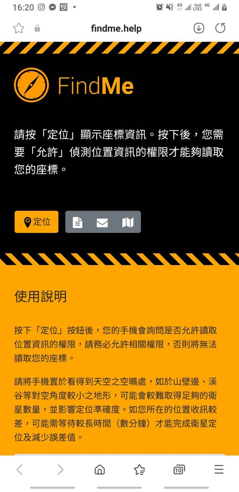
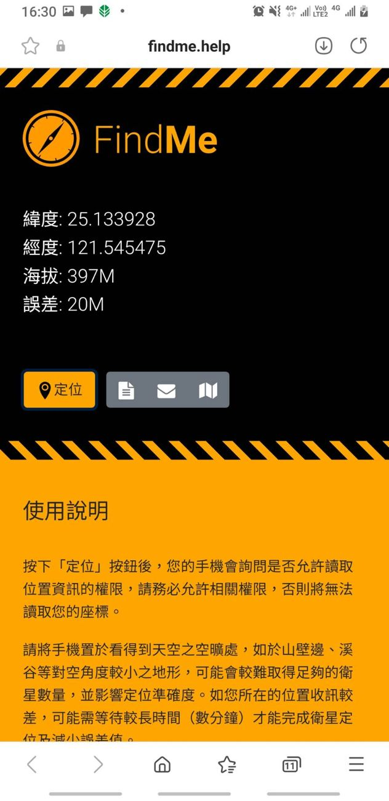
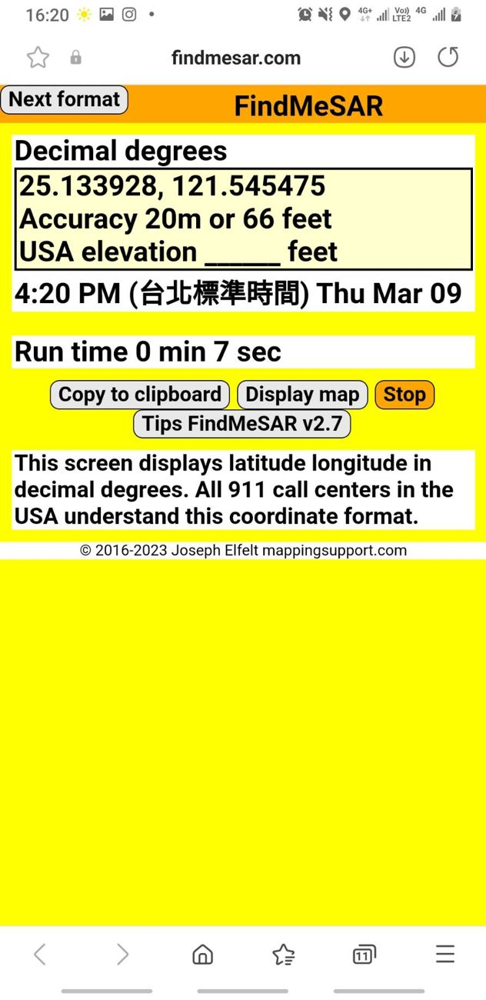
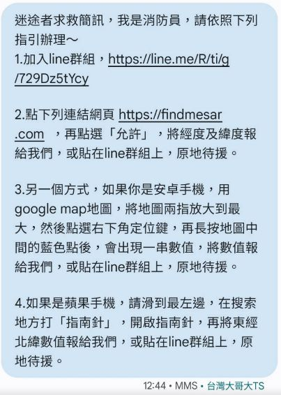
迷途者您好，我是消防員，請依下列指引辦理： 1. 加入救援 LINE 群組：（群組連結） 2. 點開網頁 https://findmesar.com ，按「允許」，把經緯度數值或截圖傳回，原地待援。 3. Android：Google 地圖放到最大，按右下角定位鍵，長按藍色點，把跳出的數值傳回，原地待援。 4. iPhone：滑到最左頁搜尋「指南針」，開啟後把經緯度傳回，原地待援。
A 扮救援者：把範本傳給 B。B 扮迷途者：照做並回傳座標。
交換角色再做一次，計時看誰回報最快、最準。
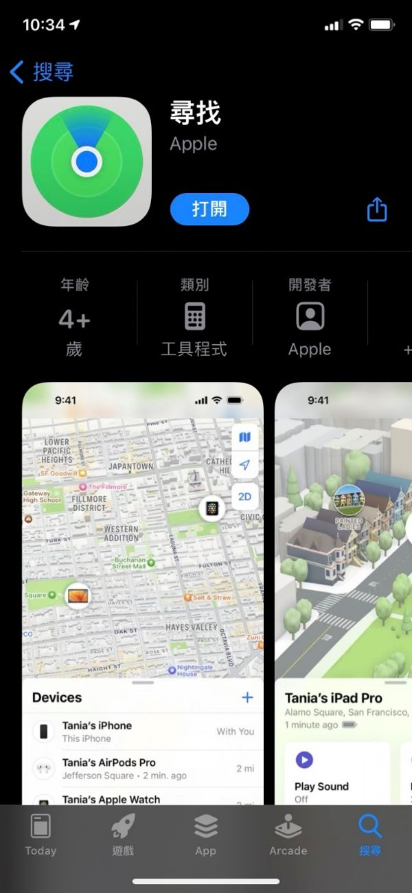
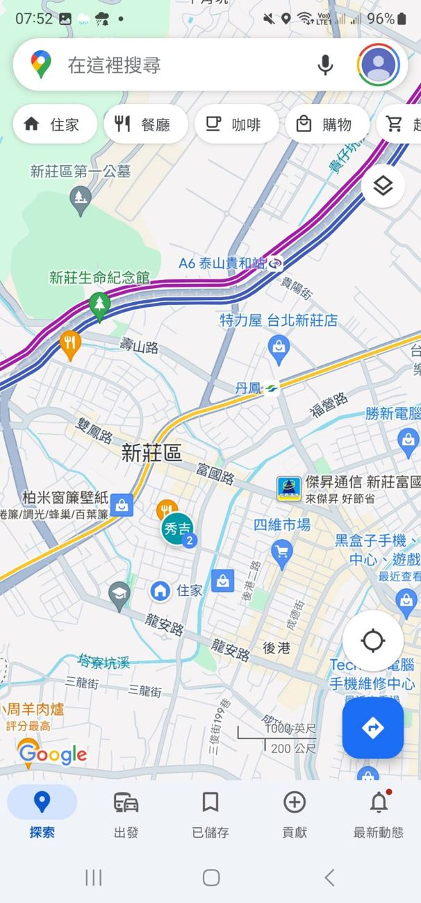
1 點右上角帳號頭像
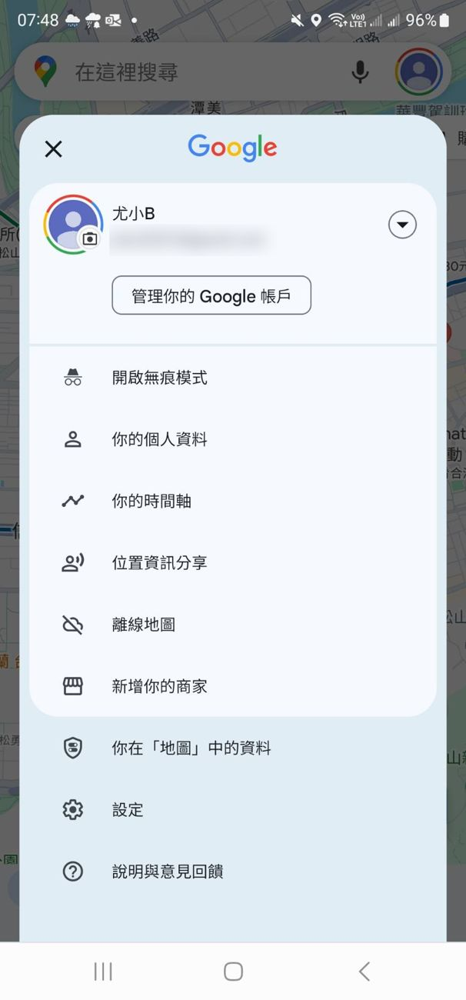
2 選「位置資訊分享」
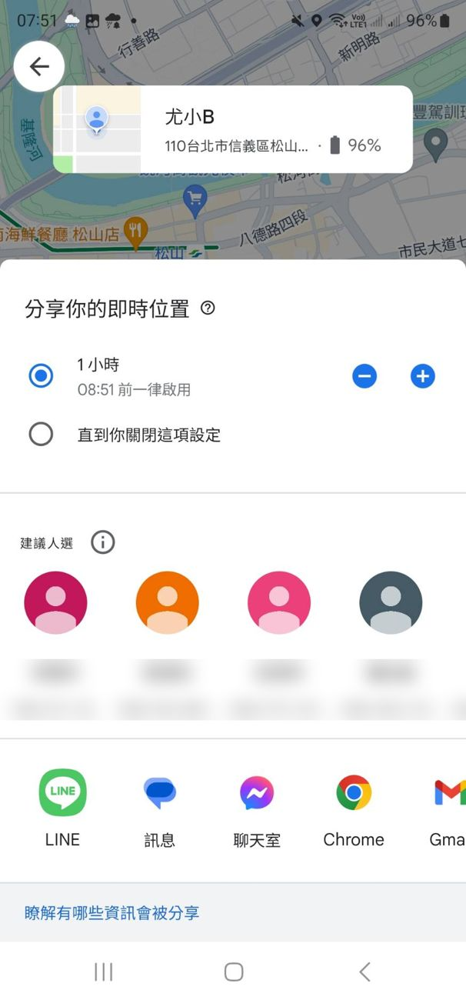
3 設定時間與對象
分享給隔壁同學 1 小時，
請對方確認看得到你的位置。
課後記得關閉分享
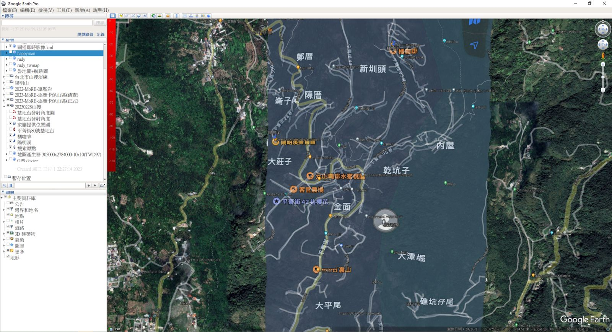
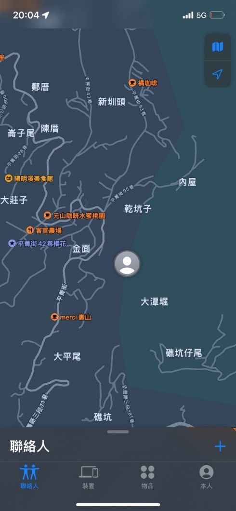
📌 小結：把最可靠的一種當主要通報方式，其他當備援。
運用各種方式，活下去
已投票 0 人（可改票）
未進食
點擊翻面未進食
沒喝水
點擊翻面沒喝水
失溫
點擊翻面風險最高、發生最快
自救第一優先：保暖
實際時間依環境與個人狀況差異很大。
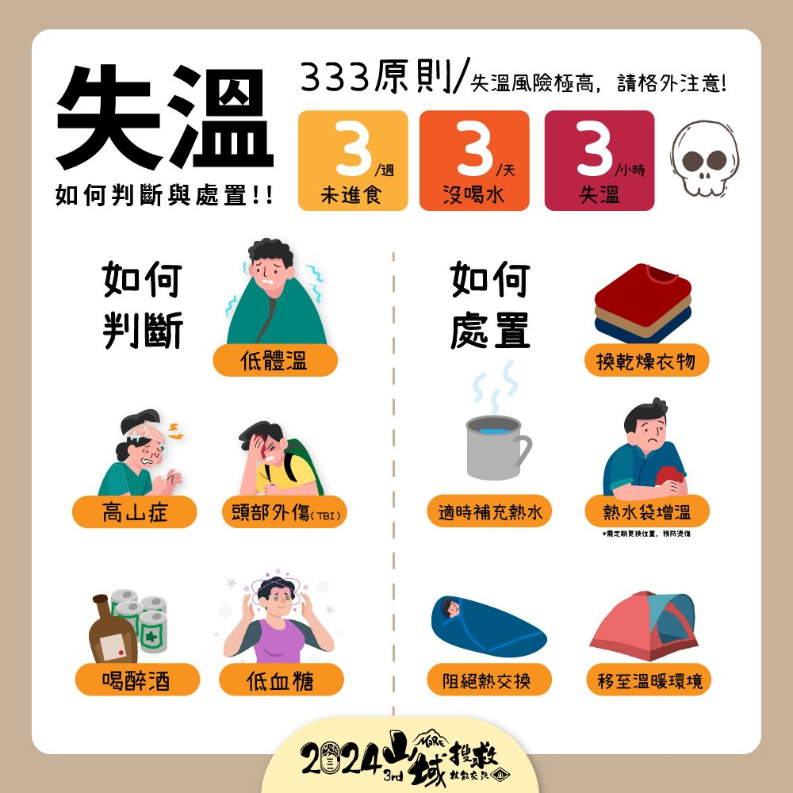
低體溫的表現，可能和 高山症、頭部外傷（TBI）、喝醉酒、低血糖 相似，需要一起區辨。
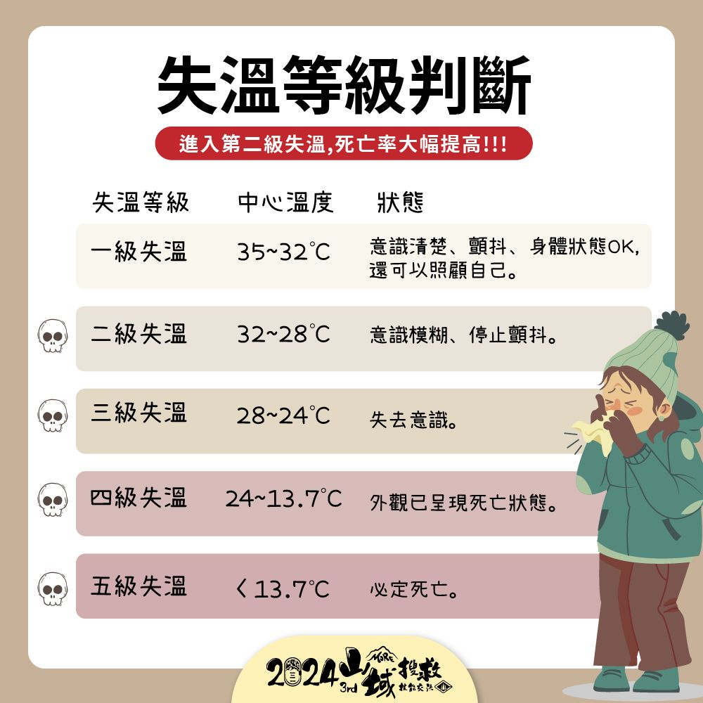
開闊、顯眼，搜救隊與直升機看得到
稜線、開闊處較有機會連上基地台或衛星
搭庇護所、避風避雨、保持體溫
自救工具箱：野外求生（備齊裝備、節省體力、保持冷靜）· 生火（保暖、烹煮、淨化水源）· 庇護所 · 觀察氣象（雲層、風向風速、氣溫）· 野外救護（處理傷口、固定外傷、評估狀況、尋求協助）
每組抽一張情境卡
用兩種方法讀出座標，並換成另一種格式
寫出給 119／留守人的簡訊：誰、在哪（座標＋精度）、發生什麼、傷況、電量與裝備
列出等待救援期間的 3 個立即行動
沒有一個方法是保證有用的。
多重準備、靈活運用，
才能提高生存機率。
Q & A · 平安上山，平安回家